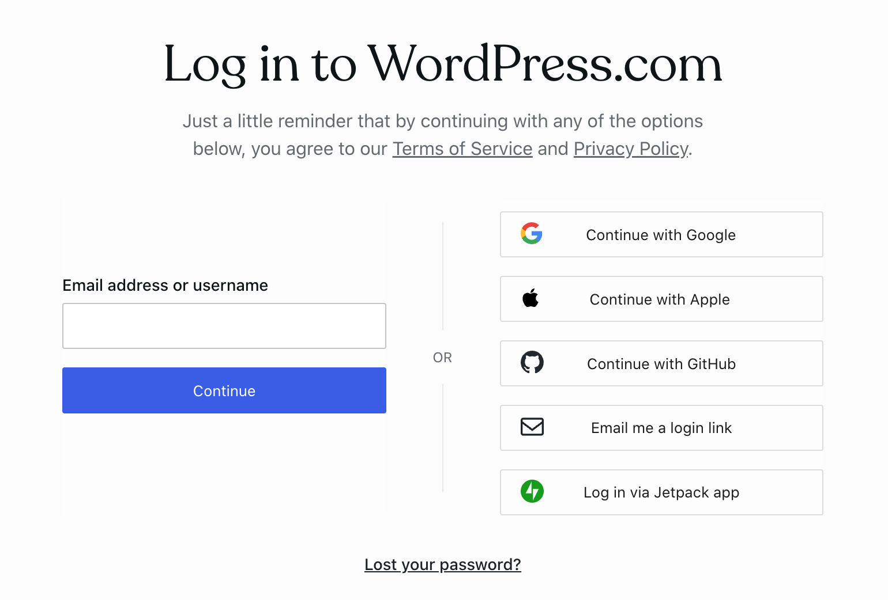
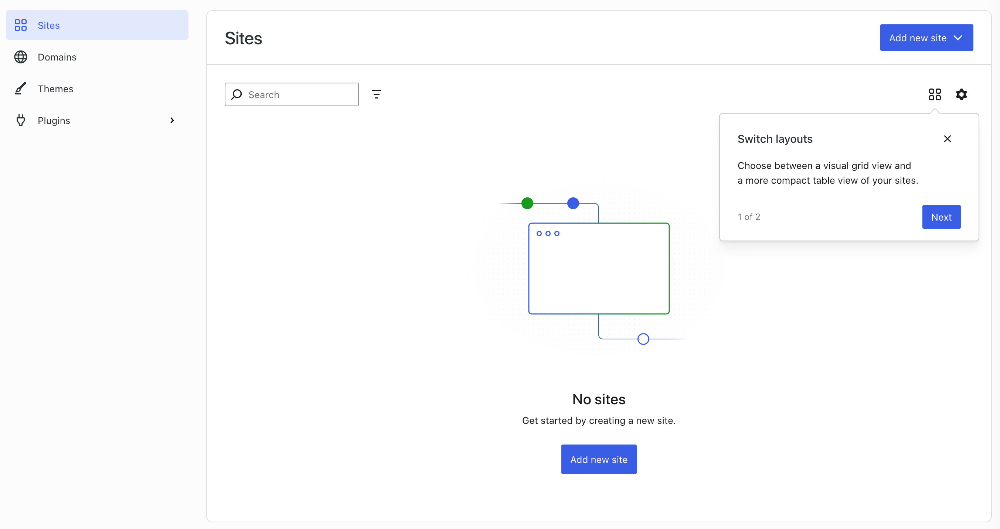
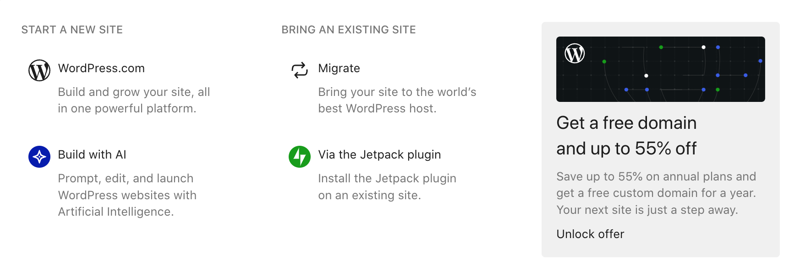
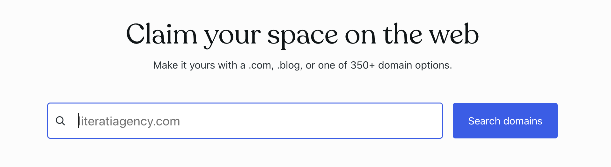
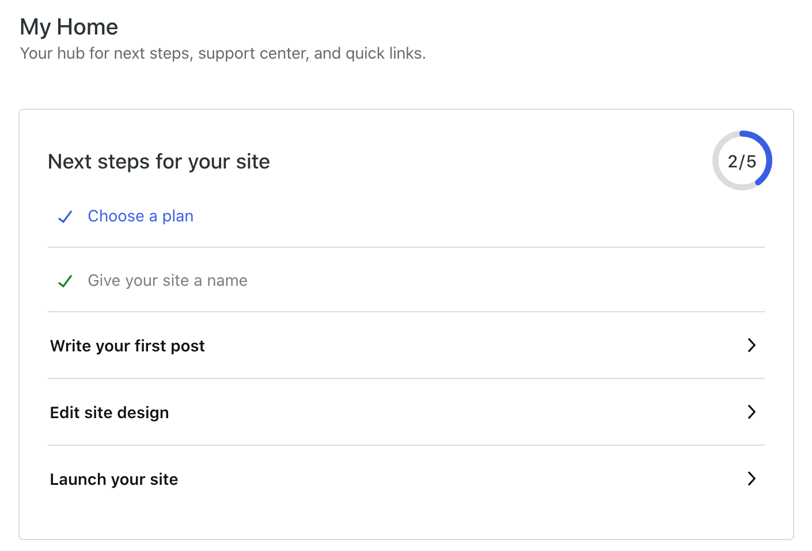
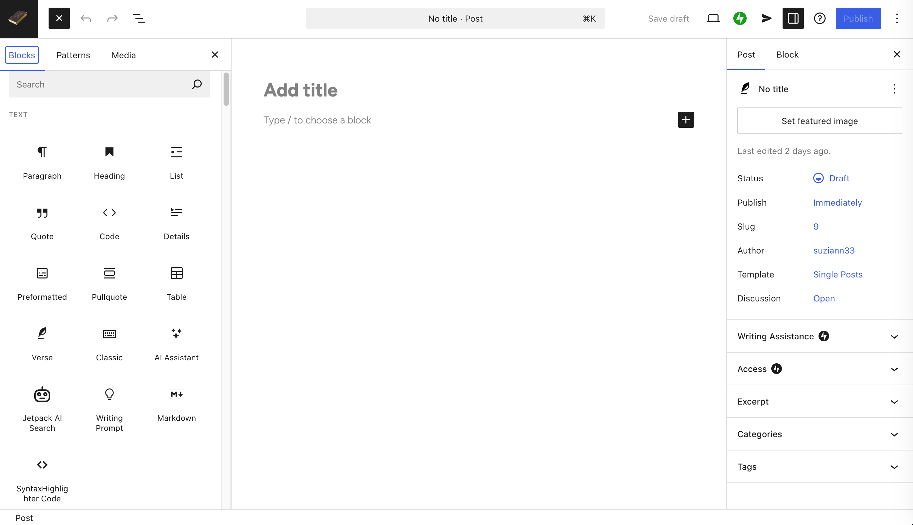

Keywords: Website, WordPress, Spaces, GitHub, Development
The easiest way to make a website is by builders. One of the most famous is WordPress. If you learn to build website by advanced technology, you can make website by Spaces or GitHub. There is a way of building website on a bought hosting with your own domain by various opportunities. If you want to make a website, you have to think about its design. You can draw on paper or by digital software (Photoshop by Adobe, Affinity by Canva).
Website for beginners
First step: registration

Write this address to your browser and click enter. When you will see a page with Create your account, choose your opportunity of registration (Google, Apple, GitHub, Email - Continue with email or by Jetpack app) and confirm it. You get confirm link to your email to confirm your email address. Click on Confirm your email and then on Continue with email, where you write your email address and click on Continue. Then you see a page with Check your email. In your email account you see new message with Log in. Click on it and then you will get to WordPress Environment in your new WordPress account.

Second step: Setup your site and domain
For making a new website, click on Add new site. And then Start a new site - WordPress.com. You can use an AI assistent by Build with AI. This tutorial describes a manual process.

You can see a notice Claim your space on the web where you can write a name of a domain, you choose for your website. Then click on Search domains. You can skip this step and to choose a name of domain later. You will have a free domain with a name yourdomain.wordpress.com. Later you can upgrade your free domain and extension of wordpress.com will not be there. Here are plans.

Third step: Setup your website
Click on Start with free and you will see admin interface. On the left is vertical block with various options to setup your website: Dashboard, My Home, Stats, Upgrades, Jetpack, Posts, Media, Pages, Comments, Feedback, Appearance, Plugins, Users, Tools, Settings. Every of these sections contains a lot of setup. Some of tools may require a paid plan. If do you not pay for now, you can not use this tool. First you see My Home and you can continue in setup.

Click on Give your site a name you will go to General Settings (Site Title, Tagline, Site Icon, Site Logo, Timezone, Admin Interface Style, Site Language).
Fourth step: Your first post

In this step you write your first post. WordPress displays guide How to work with editor. Then you choose blocks for your post like Heading, Paragraph, Image in the left side. There is a space to put your blocks in the middle. You can edit your blocks in the right side. When your post is prepared, you can publish it by Publish blue button on the right side up.
Fifth step: Editing website
Click on Edit site design in My Home you get to the interface you edit a design of your website. It contains various sections Styles, Navigation, Pages, Templates, Patterns. Then you can back to the My Home and here displays other options Customize your domain, Drive traffic to your site, Share your site. The Wordpress website created by me is here.
Would you like to make an E-shop?
You can make E-shop by WordPress and WooCommerce or Elementor Plugin. However you have to buy at least the plan Business and your own domain. If you have the free domain, WordPress carres about all. If you buy the Business Plan to make the E-shop, you have to carre about it alone. There is a lot of plugins for security, emailing, payment gates and other tools.
Summary
To make the WordPress website is now very easy. It is possible to make nice blog, E-shop or website with your portfolio only by right plugins and builders.
Website for beginners and advanced users
This platform for learning programming languages and various tools offers one good option, you can make a website by HTML5, CSS3 and JavaScript. Its name is Spaces. If you want to test your knowledge or you have an idea for website, you have to register first on this platform. After Log in click on Create a space. You may to make the website either Start with a template or Start with a blank page (with HTML and CSS code).
If you make your website by Start with a blank page, you choose a name of your website (yourdomain.w3spaces.com). Easy website is created by three files index.html, scripts.js, styles.css. If you are a novice in web development, maybe you would like to know about these files. index.html contains a code with HTML language. styles.css has a CSS code and script.js adds some JavaScript function to your website. You can learn all about it in this platform. You can add New folder and New file by Uplodad files.
If you want to make your website by Start with a template, you can choose more templates, then click on Continue.
You can choose plans for your website: Hero, Plus, Full Access.
All of them you can learn on this platform and you can buy the paid courses with a certificat. It is good for somebody who searches a good job. You can find Android / iOS application on this website to learn some programming languages too.
Website for advanced and expert users
You can make a website on your device and then upload to your own hosting or on GitHub. It is platform for developers who save their code there. It is good for one or more developers who work together on some projects. They see all changes every time, if they use right commands. You can create a new account on GitHub. You will need an email (where an autification code will come) and a password. Your username choose with concern because your website will have this username. After Login you may create your first project or repository. You can download and install a GitHub Desktop software and all of your projects to administrate by it. You will log in of course. You can use an advanced IDE (Integrated Development Environment) editors with a terminal and upload all files by it to your repositories.
For making the website on GitHub click on + and New Repository. To the Repository Name write yourusername.github.io. You can write something to Description about your new website. Then make your repository visible and choose Readme to On and then Create repository. On your new repository with username click on Settings -> Code, planning, and automation -> Pages. Then Source -> Build and deployment -> Deploy from a branch and Branch -> Build and deployment -> publishing source. You can write something to Readme.md about your website.
This repository you will Clone to your computer by GitHub Desktop click on File and then Clone Repository. You will choose the repository with your username and you have to set a place in your computer, where do you have a folder with your new website. It is needed because you will make a website on your computer. Then you can open this clone folder in an editor or IDE like Visual Studio Code (an alternative VSCodium) or your favourite. Create files like index.html (this is an initial page of your website), style.css (here you can create design of your website) and script.js (if you want to add some JavaScript function). You can add other folders for images and other media to your website. This way you can make a nice website for short time (if you know these languages - HTML, CSS, JS). At the end you can upload your website to your new repository by GitHub Desktop. All of your changes you see in its interface (you can write it to Description in the left down, Summary is required). An original version (the clone version) of your website will have red background now and new version of your website will have green background. If you are satisfied with it, you can upload it to your repository. Click on Commit to main and Push origin. Your website will be online after few minutes.
Detailed documentation about creating new repository for your website and website too you can find here or you can download my Theoria application which offers you a lot of documentation on one place. My easy website with files and folders you can find here, if you do not have an idea about it.
Did you help this contents? You can support me: [ IBAN: SK97 8330 0000 0022 0304 8185 ]